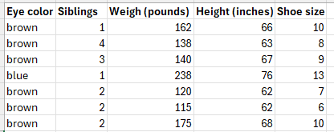
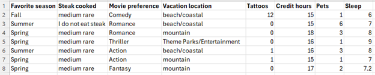
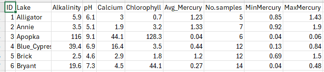
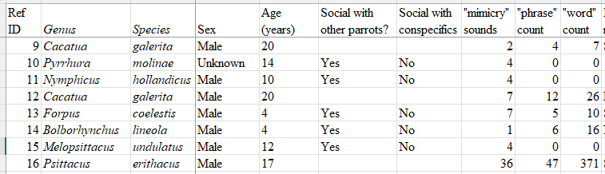

Section 1.4 Case Studies
This section introduces you to several case study scenarios. Throughout the semester we will refer to one of these studies. Several are based on class surveys from prior semesters and are the foundation for the examples throughout the text. We will learn different ways to analyze data through these case studies.
Subsection 1.4.1 Case Study - Class Survey 1
In the spring semester, a section of UNC students taking an introductory statistics course completed a survey on the first day of class identifying their eye color, current weight, shoe size, height, and the number of siblings they have. The survey was completed through Canvas, so responses were anonymous. Below is a screenshot of the first seven rows. Identify the following using the first day class survey.

Example 1.4.2. Cases.
What are the cases in the survey?
Solution.
Each student that responded is a case (the rows in the table).
Example 1.4.3. Variables.
How many variables are in the survey?
Solution.
There are 5 variables, these are the columns for eye color, siblings, weights, height, and shoe size.
Example 1.4.4. Qualitative Variables.
Which variables are qualitative in the survey?
Solution.
Eye color is the only categorial variable in the survey
Example 1.4.5. Discrete Quantitative Variables.
Identify the discrete quantitative variable(s) in the survey.
Solution.
The number of siblings are counts thus discrete.
Example 1.4.6. Continuous Quantitative Variables.
Identify the continuous quantitative variable(s) in the survey.
Solution.
The weights and heights are continuous measurements. Shoe sizes are unique since they occur in jumps of 1/2 size.
Example 1.4.7. Study Type.
What type of study was conducted?
Solution.
This is an observational study since no variable was manipulated.
Example 1.4.8. Sample Size.
How big is the sample based on the screenshot?
Solution.
The screenshot shows 7 students for the sample. The data file shows 42 students who participated in the survey.
Example 1.4.9. Population.
Who is the population?
Solution.
We can generalize the population to all UNC students.
Example 1.4.10. Sampling Method.
Which sampling method best describes how the data was collected?
Solution.
Cluster sampling since one intact group was surveyed.
Subsection 1.4.2 Case Study – Class Survey 2
In the Spring semester of 2025, UNC students proposed some questions for the class survey identifying their favorite season (spring, summer, fall, winter), how they preferred the steak being cooked (as rare, medium, medium well, well done), movie genre preference, and favorite vacation location (as coastal, mountain, theme park, city/cultural exploration, or a staycation). Students also identified how many tattoos they have, the number of credit hours they were taking this semester, the number of pets they currently have, and how many hours they typically sleep per night. Use the screen shot of the first seven rows to answer the following questions.

Example 1.4.11. Cases 2.
What are the cases in the survey?
Solution.
Each student that responded is a case. (rows in table)
Example 1.4.12. Variables 2.
How many variables are in the survey?
Solution.
There are 8 variables, these are the columns.
Example 1.4.13. Qualitative Variables 2.
Which variables are qualitative in the survey?
Solution.
Favorite season, steak cooked, movie preference, and vacation location are all categorial variables in this survey
Example 1.4.14. Discrete Quantitative Variables 2.
Identify the discrete quantitative variable(s) in the survey.
Solution.
The number of tattoos, credits hours, and pets are the discrete variables.
Example 1.4.15. Continuous Quantitative Variables 2.
Identify the continuous quantitative variable(s) in the survey.
Solution.
Sleep is a continuous measurement.
Example 1.4.16. Study Type 2.
What type of study was conducted?
Solution.
This is an observational study since no variable was manipulated.
Example 1.4.17. Sample.
How big is the sample based on the screenshot?
Solution.
The screenshot shows 7 students for the sample. The data file shows 43 students who participated in the survey.
Example 1.4.18. Population.
Who is the population?
Solution.
We can generalize the population to all UNC students.
Example 1.4.19. Sampling Method.
Which sampling method best describes how the data was collected?
Solution.
Cluster sampling since one intact group was surveyed.
Subsection 1.4.3 Case Study – Florida Bass
Largemouth bass were studied in 53 different Florida lakes to examine the factors that influence the level of mercury contamination. Water samples were collected from the surface of the middle of each lake in August 1990 and then again in March 1991. The pH level, the amount of chlorophyll, calcium, and alkalinity were measured in each sample. Use the screenshot of the first six rows to answer the following questions.

Example 1.4.20. Variables.
How many variables are in the screenshot?
Solution.
There are 8 variables with measurements. The ID and Lake name are identifiers only.
Example 1.4.21. Qualitative Variables.
Which variables are qualitative?
Example 1.4.22. Discrete Quantitative Variables.
Identify the discrete quantitative variable(s).
Solution.
Number of samples collected from the lake.
Example 1.4.23. Continuous Quantitative Variables.
Identify the continuous quantitative variable(s).
Solution.
Alkalinity, pH, Calcium, Chlorophyll, Mercury .
Example 1.4.24. Study Type.
What type of study was conducted?
Solution.
This is an observational study since no variable was manipulated. They recorded the measurements as present in the lakes.
Example 1.4.25. Sample.
How big is the sample based on the description?
Solution.
The description states 53 lakes were sampled.
Example 1.4.26. Population.
What is the population?
Subsection 1.4.4 Case Study – Vocal Mimicry of Parrots
Parrots are one of the rare animal taxa with life-long vocal learning. Parrot vocal repertoires are difficult to study in the wild, but companion parrots offer a valuable data source. The authors surveyed the public about mimicry repertoires in companion parrots to determine whether vocal learning varied by (1) species, (2) sex, (3) age, and (4) social interaction with other parrots. Species differed significantly in mimicry ability, with grey parrots having the largest mimicry repertoires. Analyses of all birds (n = 877) found no overarching effects of sex, age, or parrot-parrot social interactions on mimicry repertoires. Authors: Lauryn Benedict, Alexandra Charles , Amirah Brockington and Christine R Dahlin.
A survey of vocal mimicry in companion parrots:
Article.

Example 1.4.27. Variables.
How many variables are in the screenshot?
Solution.
There are 9 variables with measurements. The Ref ID is an identifier only.
Example 1.4.28. Qualitative Variables.
Which variables are qualitative?
Solution.
Genus, Species, sex, social with other parrots, and social with conspecifics
Example 1.4.29. Discrete Quantitative Variables.
Identify the discrete quantitative variable(s).
Solution.
Age, mimicry sounds counts, phrase counts, and word counts.
Example 1.4.30. Continuous Quantitative Variables.
Identify the continuous quantitative variable(s).
Solution.
none in this data set shown
Example 1.4.31. Study Type.
What type of study was conducted?
Solution.
This is an observational study since no variable was manipulated. They gathered data from a questionnaire.
Example 1.4.32. Sample.
How big is the sample based on the description?
Solution.
The description states 877 birds were in the study.
use \(\lt \) for less than and \(\gt \) for greater than symbols for R coding